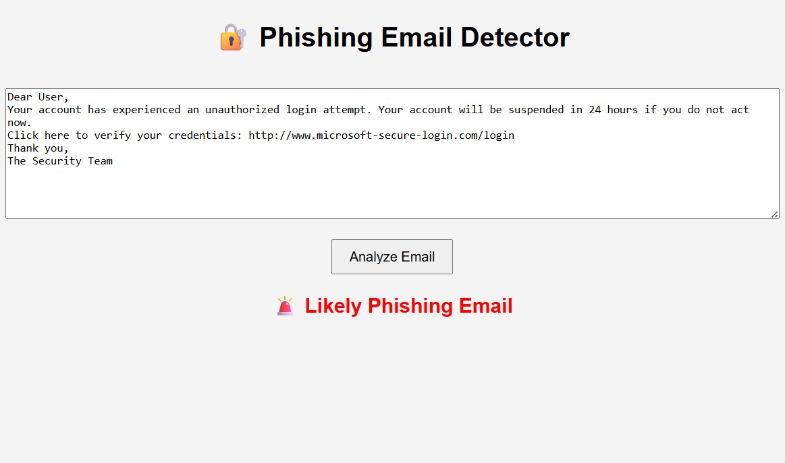
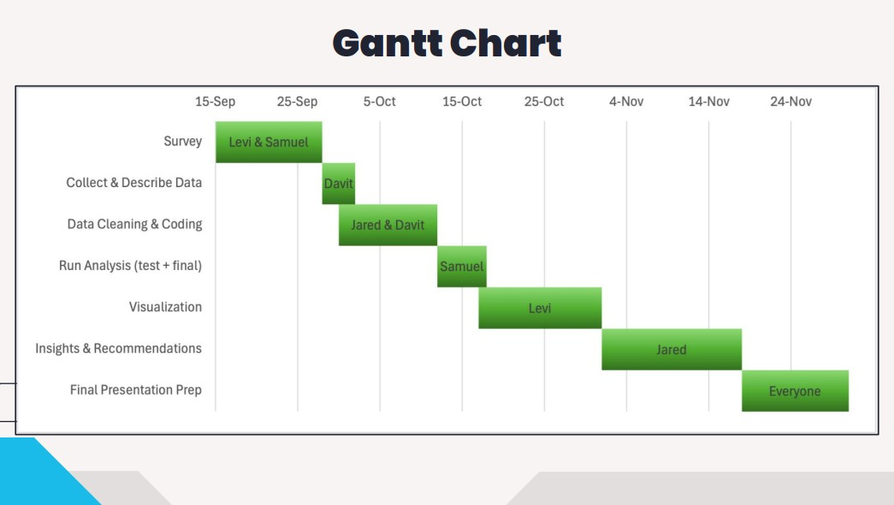
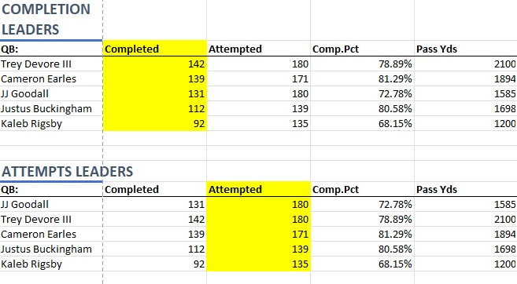

This is my Phishing Detector Project that was created to help people detect if an email is Phishing or safe. I used HTML, CSS, and javascrip to create the project It scans for key words and has a point system that if that depending on the score, the email is labeled as safe, suspicious, or likely phishing.

This is my Analytics project where our objective was to study the data that we collected from event attendance on campus and see what events people were more likely to go to and what factors went into event attendance. The attached pdf shows the analytics and the statistics that were found based on the gathered data.

This is the player stats for each team in the SFL for the 2026 regular season. I helped to create the statistical database where each players stats are inputed for each game that is played and it shows a top 5 list for each major category such as total yards, total touchdowns, total catches, average YPC, etc. It also has a top 5 list for the quarterbacks with different categories that apply to them.
My name is Jared Fuller and I am currently a senior at Trevecca Nazarene University pursuing a Bachelor's degree in Information Technology with a focus in Cyber Security.
I plan to graduate in May 2026. Currently, I am a CIS intern with the UT Institute for Public Service, where I am gaining hands-on experience to protect digital infrastructure and further my career in the security field.
As a leader in the SFL club, I helped to create a flag football league for students on campus where I managed schedules, referees, and rosters for the league. I also oversaw data entry and data management while contributing to the creation of the statistical database for the SFL
As a Crosspoint College Ambassador, I represent Crosspoint church where I am a leader at the college nights that they hold every Tuesday. My role is to make students feel welcomed at the college nights as well as lead a Bible study apart from the college nights where it is a safe environment to ask questions and learn how to walk with the Lord.
As a member of Equip I help with events where our goal is to share the Gospel with people as well as equip leaders with the tools and support they need to lead others to a closer relationship with Jesus.
I made the dean's list at Trevecca Nazarene University meaning that I had above a 3.5 gpa for the semesters that I made it.
I was chosen to have my family seated with the Boones at graduation. They pick one family every year of a student who is involved on campus and that they have gotten to know.
Thoughout my academic career here at Trevecca, I have participated in all of the intramurals and have won 11 different intramural championships
Email: jaredfuller109@gmail.com